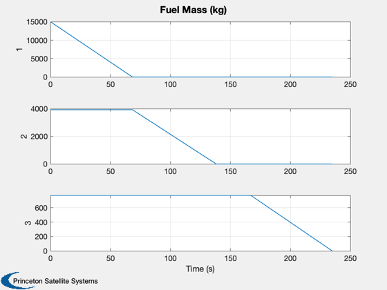

Simulation of a guided launch with GuidedLaunch2DSim
The simulation ends at burnout. This is the same simulation used by LaunchGUI. The simulation allows you to scale the last stage of the vehicle.
See also: RocketDatabase, LaunchRHSData, GuidedLaunch2DSim, GuidedLaunch2DRHS
Contents
%-------------------------------------------------------------------------- % Copyright 2015 Princeton Satellite Systems, Inc. % All rights reserved. %--------------------------------------------------------------------------
Demo of Pegasus air launch
rocket = RocketDatabase('pegasus'); d = LaunchRHSData(2,rocket); d.rhsFun = @GuidedLaunch2DRHS; fpa0 = 0.95; % flight path angle (rad) scale = 1; % scale of last stage coast = 0.5; % minutes, direct ascent angle = 3; % degrees, indirect ascent % Desired mass and initial conditions d.mDes = 400; d.h0 = 12; % km d.v0 = 0.25; % km
First case: direct ascent
d.direct = 1; params = [fpa0 scale coast]; [time,xTraj,dD] = GuidedLaunch2DSim( params, d ); h = NewFig( 'Guided Launch: Direct' ); set(h,'position',[0,400,1120,420]); subplot(1,2,1) plot(xTraj(:,1),xTraj(:,2)), set(gca,'fontsize',14) xlabel('Range [km]'), ylabel('Alt [km]') hold on, axis equal, grid on title(sprintf('FLIGHT TIME = %4.0f SEC',time(end))) subplot(1,2,2), set(gca,'fontsize',14) ax = plotyy(time',xTraj(:,3)',time',xTraj(:,4)'); grid on, hold on axes(ax(1)) xlabel('Time [s]'), ylabel('V [km/sec]') axes(ax(2)) ylabel('Gamma [rad]') title(sprintf('V_{BO} = %2.2f KM/SEC, GAMMA_{BO} = %2.1f DEG',xTraj(end,3),xTraj(end,4)*180/pi)); Plot2D(time',xTraj(:,5:7)','Time (s)',{'1','2','3'},'Fuel Mass (kg)')
Second case: indirect launch
d.direct = 0; params = [fpa0 scale angle*pi/180]; [time,xTraj,dID] = GuidedLaunch2DSim( params, d ); h = NewFig( 'Guided Launch: Indirect' ); set(h,'position',[0,400,1120,420]); subplot(1,2,1) plot(xTraj(:,1),xTraj(:,2)), set(gca,'fontsize',14) xlabel('Range [km]'), ylabel('Alt [km]') hold on, axis equal, grid on title(sprintf('FLIGHT TIME = %4.0f SEC',time(end))) subplot(1,2,2), set(gca,'fontsize',14) [ax,H1,H2] = plotyy(time',xTraj(:,3)',time',xTraj(:,4)'); grid on, hold on axes(ax(1)) xlabel('Time [s]'), ylabel('V [km/sec]') axes(ax(2)) ylabel('Gamma [rad]') title(sprintf('V_{BO} = %2.2f KM/SEC, GAMMA_{BO} = %2.1f DEG',xTraj(end,3),xTraj(end,4)*180/pi)); Plot2D(time',[xTraj(:,end)';(xTraj(:,4)+xTraj(:,end))']*180/pi,'Time [s]',... {'Control (\alpha)','Total Angle (\gamma + \alpha)'},'Thrust Angle from Horizonal (deg)') Figui %-------------------------------------- % $Id: 138f4375784e601790bf9db75bdce453cb654aff $